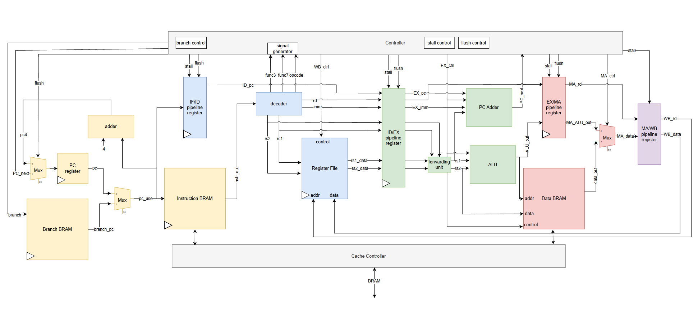

Personal · Jun – Aug 2026
5-Stage RISC-V CPU
| Team | Team of 3 |
|---|---|
| Tools | SystemVerilog, Spartan-7, Computer Architecture, AXI, CDC |
| Links | GitHub repository |
A 5-stage pipelined RV32I processor that runs real compiled C programs on an AMD Spartan-7 FPGA. It boots programs over UART, runs them out of on-board DDR3 through 32 KB instruction and data caches, and draws to a monitor over HDMI at 720p. My team of three built it over the summer.

The Problem
Coursework teaches what a pipeline is. We wanted to find out what it takes to build one that runs real software, not just a few hand-written test instructions. The goal was a CPU that could take any C program compiled with the standard RISC-V GNU toolchain and run it on an FPGA with visible output.
That raised real-system problems. The board's DDR3 memory is far slower than the core, so we needed caches. Re-synthesizing the FPGA for every new program was too slow, so we needed a way to load programs at runtime. And we wanted something more satisfying than LEDs to show the result.
The Process
The core
The base is the RV32I instruction set on a classic five-stage pipeline: fetch, decode, execute, memory and write-back. Hazard detection and data forwarding keep instructions flowing without unnecessary stalls. A 2-bit dynamic branch predictor, with about 7 KB of branch history stored in block RAM, cuts the cost of taken branches.
Memory hierarchy
The CPU uses a Harvard layout with separate instruction and data caches. Each is 32 KB and direct-mapped, with 512 lines of 64 bytes. On a miss, the cache refills its line from the board's 256 MB DDR3 over AXI, so a program can be much larger than the on-chip memory.

Making it usable
A UART bootloader loads compiled binaries straight into memory, and a Makefile and Python script handle compiling and uploading, so a new program runs without regenerating the bitstream. For output, the design reads a frame buffer in DDR3 and drives a 720p, 60 Hz HDMI signal with TMDS encoding and serialization. The demo C program draws to the screen by writing pixels into that frame buffer.
Timing and testing
We optimized the RTL until the core closed timing at 90 MHz. Each major block (ALU, fetch, decode, memory controller, bootloader, HDMI) has its own directed testbench, plus a top-level CPU test.
The Outcome
The finished CPU runs C programs compiled with the RISC-V GNU toolchain at 90 MHz, loads them over UART, and draws to a monitor at 720p. Next steps are the M (multiply/divide) and F (floating-point) extensions, keyboard input, and a full UVM verification environment to replace the directed tests.